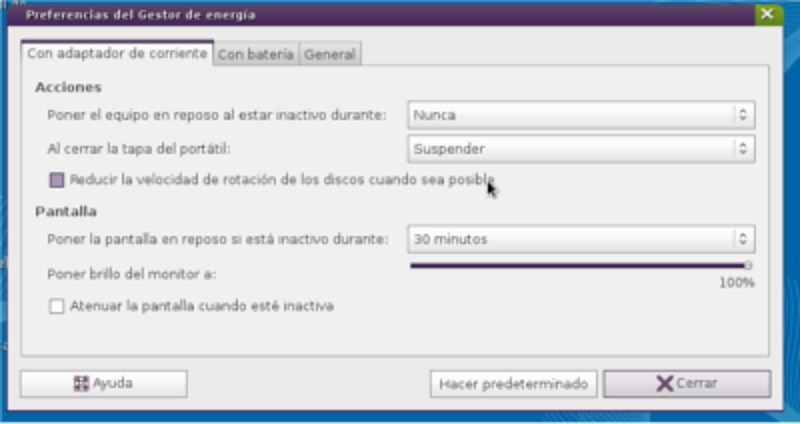
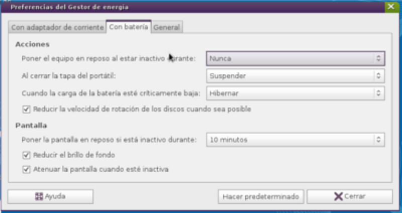

Gestión de la energía - Batería
De Huayra
Gestión de energía te permite cambiar las configuraciones sobre el uso y consumo de energía de tu netbook si está consumiendo mucha batería o no, o bien para optimizar su uso. Para eso, tenés que entrar en Preferencias de gestión de energía.
- Preferencias
- Para acceder a las preferencias, podés hacerlo directamente sobre el icono de batería,y ahí hacés clic en "Preferencias" o yendo al Menú Huayra, Sistema, luego Preferencias y finalmente Gestor de energía.

- También entrando en Icono de Configuración del sistema y dentro de Hardware, vas a encontrar "Gestor de energía" y después elegir "Preferencias"

- De cualquiera de las dos maneras, la ventana de preferencias te permite controlar:


- La intensidad del monitor LCD cuando trabaje con batería o corriente.
- El tiempo de espera para las acciones apagar la pantalla y suspender el equipo.
- Las acciones a realizar cuando la pantalla del portátil está cerrada.
- La política del icono del área de notificación.
Las preferencias se dividen de acuerdo a si la computadora está enchufada, consumiendo la batería o general.
- Preferencias de corriente alterna
- 
- Preferencias de la batería}
- 
Esto permite que la netbook reduzca el uso de energía cuando esté en estado ocioso o cuando no se requieran todas sus capacidades.
- Preferencias generales


- Tiempos de inactividad del sistema y sesión
- Las Preferencias del salva-pantallas influyen sobre el uso de la batería cuando suspenden el equipo. Es entonces cuando Gestión de energía realiza todas las acciones de sesión inactiva tales como activar el modo ahorro de energía y disminuir la intensidad del panel del portátil.

- Tan pronto como la sesión se marque como inactiva, Gestión de energía comienza su propio temporizador del «sistema». Cuando se alcanza el tiempo establecido en Preferencias del salva-pantallas, y la carga de la CPU está inactiva, entonces se realiza la acción de sesión inactiva, que generalmente apaga la pantalla, o suspende o hiberna el equipo.

{kind=link}
{kind=link}
{kind=link}
- Preguntas más frecuentes
- Estas son preguntas que se repiten frecuentemente en la lista de correo.
- ¿Cuál es la capacidad de la batería?
La capacidad es cuánta carga puede almacenar la batería comparado con las guías de uso del fabricante.

- ¿Cuál es la diferencia entre suspender e hibernar?
El estado de suspensión es una característica para ahorrar energía que usa el nivel más bajo de consumo que preserva los datos de programa en la memoria de los equipos. Cuando tu equipo se encuentra en un estado de suspensión, no se llevarán a cabo tareas computacionales hasta que se vuelva a la actividad normal. No se volverá a la actividad normal hasta que llegue una señal proveniente de un evento externo tal como la pulsación de una tecla. Generalmente lleva unos pocos segundos suspender el equipo y después volver a la actividad normal.
El estado de hibernación guarda completamente el estado del equipo al disco duro y lo apaga, de tal forma que el equipo parece estar apagado. No se volverá a la actividad normal hasta que llegue una señal proveniente de un evento externo tal como la pulsación de una tecla. Este es el estado de reposo que menos energía necesita. Si quitás el cable de corriente alterna en un equipo de sobremesa, o se queda sin batería en un portátil, no se perderá el trabajo realizado. Puede llevar un minuto o más hibernar y despertar un equipo.
- Mensajes de notificación
- En Huayra te pueden aparecer distintos mensajes (notificaciones) que te indican el estado de tu batería.
- Igualmente, si no estás seguro de qué indica el icono de energía, podés ir con el mouse, y posicionarte arriba, ahí aparecerá una leyenda con el porcentaje de energía y tiempo restante de la misma.
- Si el icono aparece con un rayo al costado, te indica primero, que la batería se está cargando y segundo, que el equipo está conectado a un adaptador de corriente (al cable).
- Energía baja
- Vas a recibir una notificación cuando la carga de la batería esté baja. En este caso, deberás cambiar la alimentación a corriente alterna (poner el cable a tu netbook) muy pronto, de lo contrario tu equipo se apagará.
- Además, arriba en el panel, el icono de batería aparecerá casi vacía o descargada, de esa manera también podés ir siguiendo el estado de la misma.
- Energía críticamente baja
- Cuando el equipo ya se quedó sin energía, te va a aparecer una notificación explicando qué acción se requiere. Podés cambiar la acción de "críticamente baja" usando las herramientas de preferencias.